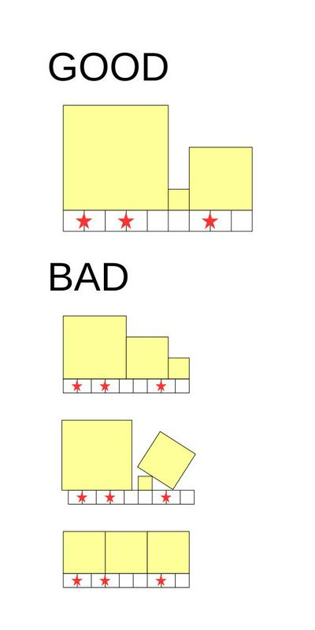

有一个长度为 $N$ 的木板，木板上有 $M$ 个标记，第 $i$ 个标记距离木板左端点的距离为 $X_i$。
你需要在木板上面放若干个正方形木块，需要满足如下四个条件：
所有木块的长度必须为整数，且底面需要紧贴模板。
木块放置的位置不能超出木板，且木块之间不能留有水平空隙。换句话说，所有木块的底面恰好覆盖了木板。
两个木块的分解处不能在标记的正上方。
下图是一些满足条件与不满足条件的例子：
定义一种放置方案的优美度为木板上所有正方形面积的乘积。求所有满足条件的放置方案的优美度之和。
第一行包含两个非负整数 $N, M$ ($1 \leq N \leq 10^9; 0 \leq M \leq 10^5$)，表示木板的长度和标记的个数。
第二行包含 $M$ 个正整数 $X_1, X_2, \cdots, X_M$ ($1 \leq X_i < X_{i+1} \leq N - 1$)，表示所有标记的位置。
输出一行一个整数，表示所有满足条件的方案的优美度之和模 $10^9 + 7$ 的值。
(ps: 这里不讲组合意义转化做法，该做法请右转官方题解)
考虑朴素 DP，用 $f_i$ 表示当前最后一个木块的右端点为 $i$ 的所有方案优美度之和，则有 $$ f_i = \begin{cases} 0 & i \text{ 处有标记} \\ \displaystyle \sum_{j=0}^{i-1} f_j \cdot \left( i - j \right)^2 & i \text{ 处无标记} \end{cases} $$
但是复杂度是 $O \left( N^2 \right)$ 的，无法通过。
注意到 DP 的表达式中出现了前缀和，因此我们尝试使用前缀和优化：
设 $\displaystyle Q_i = \sum_{j=0}^{i-1} f_j \cdot \left( i - j \right)^2$，于是有 $f_i = Q_i$，且
$$ Q_{i+1} - Q_i = \sum_{j=0}^i f_j \cdot \left( i + 1 - j \right)^2 - \sum_{j=0}^{i-1} f_j \cdot \left( i - j \right)^2 = \sum_{j=0}^i f_j \cdot \left[ \left( i + 1 - j \right)^2 - \left( i - j \right)^2 \right] = \sum_{j=0}^i f_j \cdot \left( 2 i - 2 j + 1 \right) = 2 \sum_{j=0}^{i-1} f_j \cdot \left( i - j \right) + \sum_{j=0}^i f_j $$
这引导我们再记录 $\displaystyle L_i = \sum_{j=0}^{i-1} f_j \cdot \left( i - j \right)$ 和 $\displaystyle F_i = \sum_{j=0}^{i-1} f_j$，于是就有 $$\begin{cases} F_{i+1} = F_i + f_i = F_i + Q_i \\ L_{i+1} = L_i + F_i + f_i = F_i + L_i + Q_i \\ Q_{i+1} = Q_i + 2 L_i + F_i + f_i = F_i + 2 L_i + 2 Q_i \end{cases} \tag 1 \label 1 $$
机智的同学已经看出这可以写成矩阵的形式：
$$ \begin{bmatrix} F_{i+1} \\ L_{i+1} \\ Q_{i+1} \end{bmatrix} = \begin{bmatrix} 1 & 0 & 1 \\ 1 & 1 & 1 \\ 1 & 2 & 2 \end{bmatrix} \cdot \begin{bmatrix} F_i \\ L_i \\ Q_i \end{bmatrix} \tag 2 \label 2 $$
那么，如果 $i$ 处有标记，转移和 $\eqref 1$ 式类似，只是 $f_i = 0$，从而转移矩阵就变成了 $\begin{bmatrix} 1 & 0 & 0 \\ 1 & 1 & 0 \\ 1 & 2 & 1 \end{bmatrix}$ (二项式矩阵)：
$$ \begin{bmatrix} F_{i+1} \\ L_{i+1} \\ Q_{i+1} \end{bmatrix} = \begin{bmatrix} 1 & 0 & 0 \\ 1 & 1 & 0 \\ 1 & 2 & 1 \end{bmatrix} \cdot \begin{bmatrix} F_i \\ L_i \\ Q_i \end{bmatrix} $$
那么朴素的实现是 $O \left( N \right)$，但是注意到标记点的个数不多 (只有不超过 $10^5$ 个)，因此大多数的转移都形如 $\eqref 2$ 式，而且这些段通常都很长 —— 于是不难想到使用矩阵快速幂优化。
初始矩阵为 $\begin{bmatrix} F_1 \\ L_1 \\ Q_1 \end{bmatrix} = \begin{bmatrix} f_0 \\ f_0 \cdot 1 \\ f_0 \cdot 1^2 \end{bmatrix} = \begin{bmatrix} 1 \\ 1 \\ 1 \end{bmatrix}$，然后分别左乘 $1, 2, \cdots, N - 1$ 位置的矩阵 (分段矩阵快速幂)，最后答案就是 $f_N = Q_N$。
时间复杂度 $O \left( M \log N \right)$。
#include <bits/stdc++.h>
#define copy(x, y) memcpy(y, x, sizeof(mat))
typedef long long ll;
typedef int mat[3][3], (*pmat)[3];
typedef const int (*cpmat)[3];
const int N = 100054, mod = 1000000007;
const mat AC = {{1, 0, 1}, {1, 1, 1}, {1, 2, 2}}, RJ = {{1, 0, 0}, {1, 1, 0}, {1, 2, 1}};
int n, L;
int x[N];
mat ans = {{1, 0, 0}, {1, 0, 0}, {1, 0, 0}};
inline void __builtin_matmul(cpmat a, cpmat b, pmat ret) {
#define MUL(i, j) ret[i][j] = ((ll)a[i][0] * b[0][j] + (ll)a[i][1] * b[1][j] + (ll)a[i][2] * b[2][j]) % mod
#define MUL_ROW(i) MUL(i, 0), MUL(i, 1), MUL(i, 2)
MUL_ROW(0), MUL_ROW(1), MUL_ROW(2);
}
inline void matmul(cpmat a, cpmat b, pmat ret) {mat tmp; __builtin_matmul(a, b, tmp), copy(tmp, ret);}
void matPowerMod(cpmat a, ll n, pmat c) {mat tmp; for (copy(a, tmp); n; n >>= 1, matmul(tmp, tmp, tmp)) if (n & 1) matmul(tmp, c, c);}
int main() {
int i;
scanf("%d%d", &L, &n);
for (i = 1; i <= n; ++i) scanf("%d", x + i);
L -= x[n] + 1;
for (i = n; i; --i) x[i] -= x[i - 1] + 1;
for (i = 1; i <= n; ++i) matPowerMod(AC, x[i], ans), matmul(RJ, ans, ans);
matPowerMod(AC, L, ans), printf("%d\n", ans[2][0]);
return 0;
}
坑1：同样需要注意矩阵快速幂的时候是左乘还是右乘。
坑2：三阶矩阵的乘法可以通过 #define 来手动循环展开。